Content Strategy
Editorial planning, positioning, launch content, audience research, and content systems.
I’m a content marketer, writer, and SEO/AEO strategist with experience across fintech, crypto, payments, and the social impact sector.
I help brands explain complex products clearly, build content systems that perform, and make their websites easier for people and LLMs to understand.
An educational content series designed to make DeFi concepts clearer, easier to discover organically, and more accessible to both readers and AI search platforms.
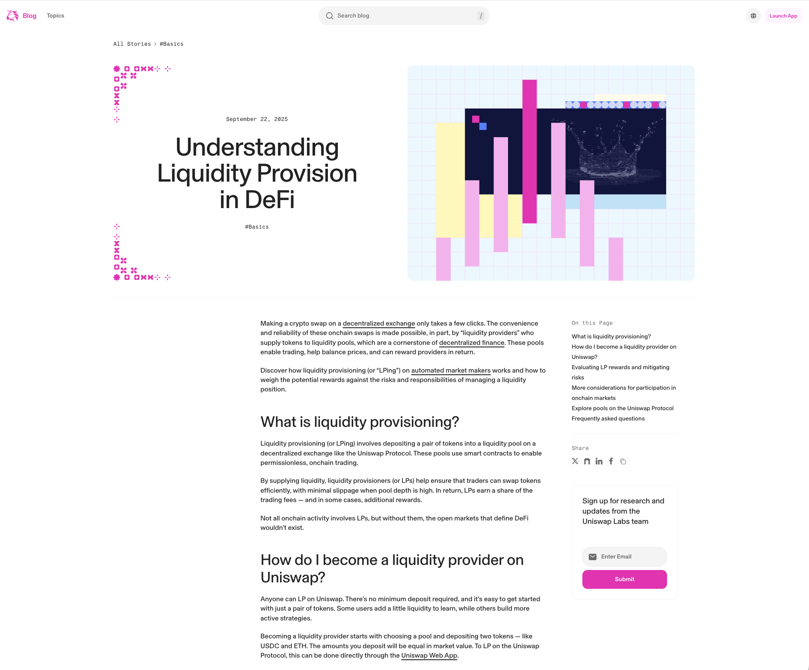
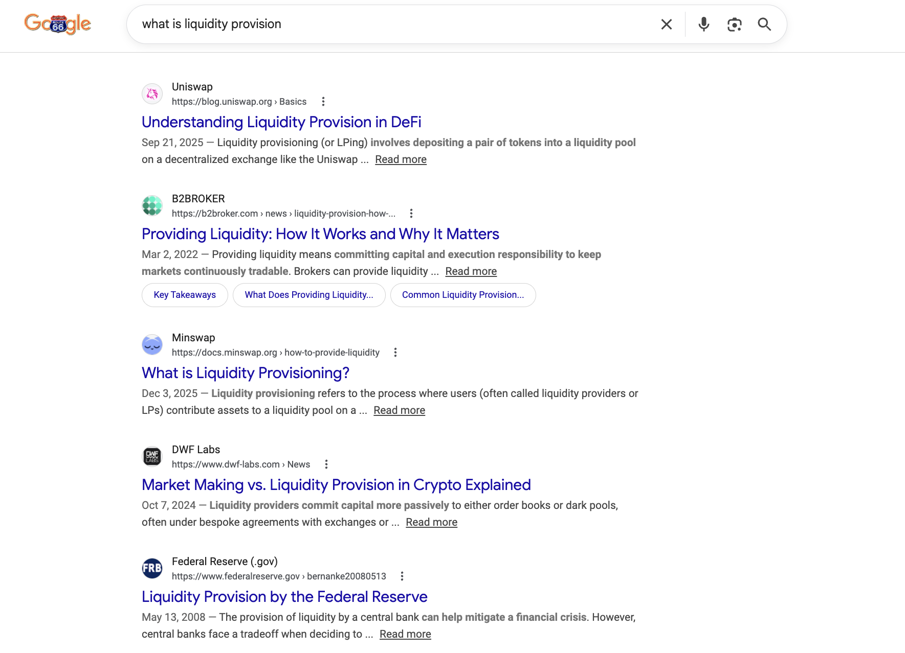
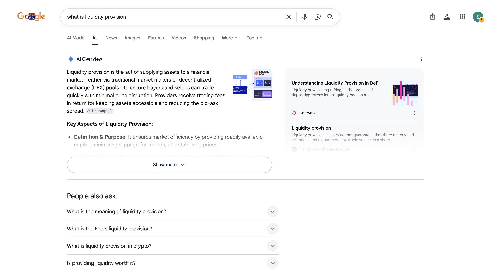
A recurring flagship research report for The Giving Block, designed to translate crypto donation data into clear fundraising trends, nonprofit impact stories, and market-facing insights for nonprofit leaders, fundraisers, donors, and media.
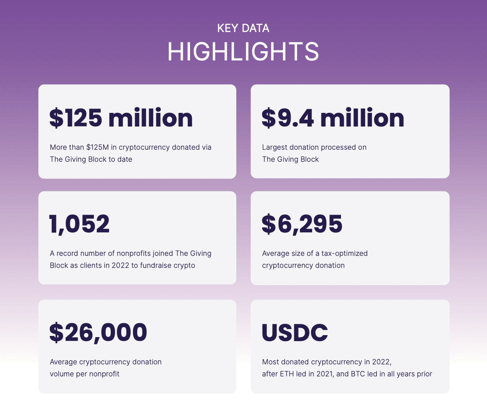
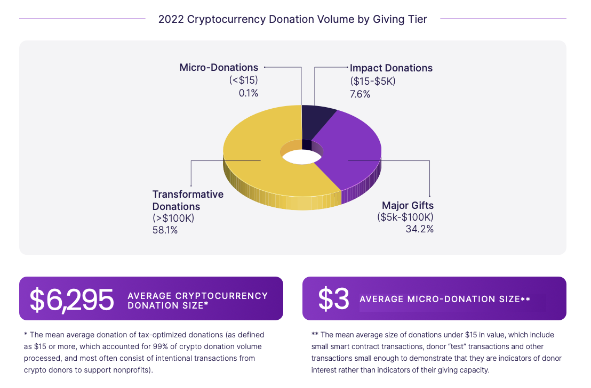
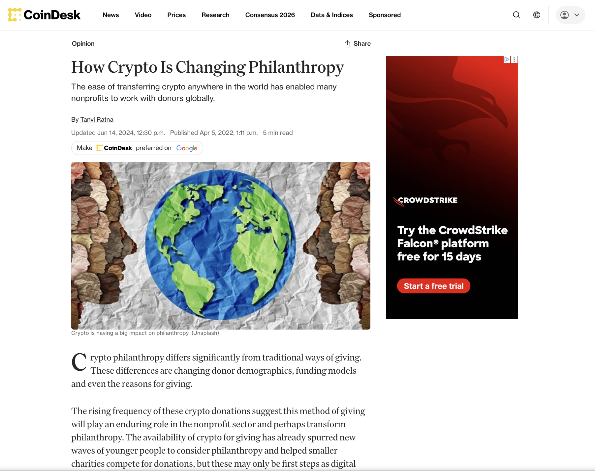
A template-level SEO/AEO optimization project across 10,000+ token detail pages, designed to improve organic discovery, mobile visibility, structured search performance, and how token pages are interpreted by search engines and AI systems.
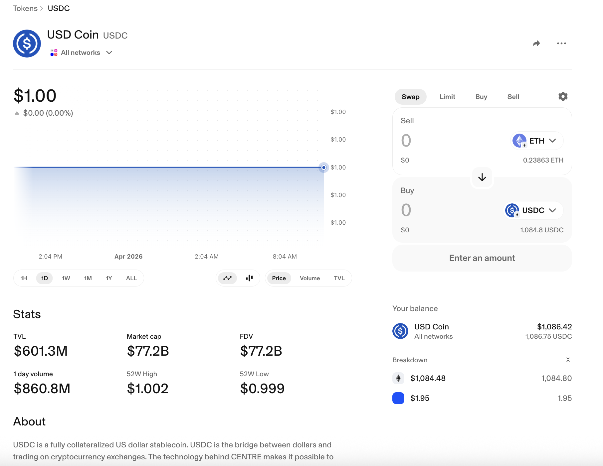
[
"@context": "https://schema.org/",
"@type": "Product",
"name": "USD Coin (USDC)",
"description": "Buy, sell, and swap USD Coin (USDC). View real-time prices, charts, trading data, and more. Current price: $1.00",
"offers": {
"@type": "Offer",
"priceCurrency": "USD",
"price": 1
}]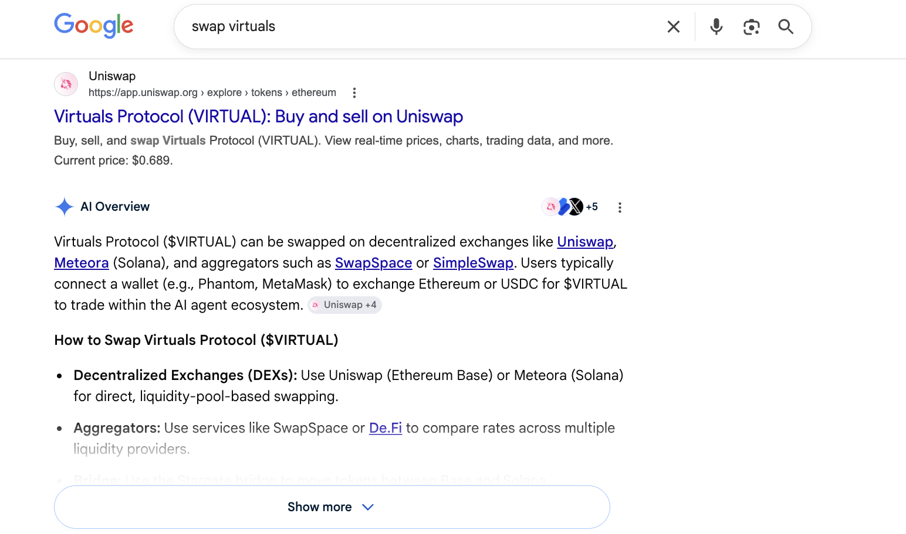
A study abroad program catalog for AFS Intercultural Programs, written to help students and families understand international exchange opportunities, compare program options, and feel confident taking the next step toward studying abroad.
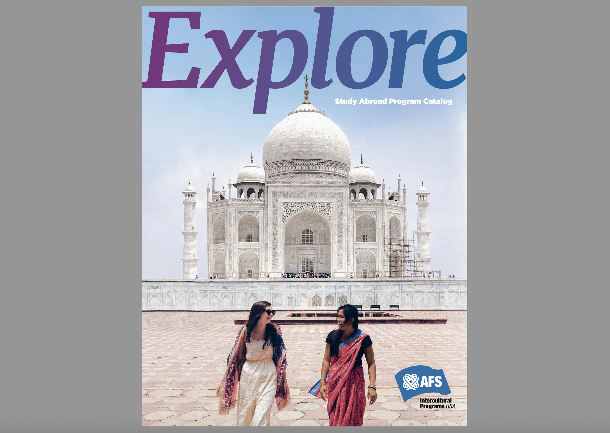
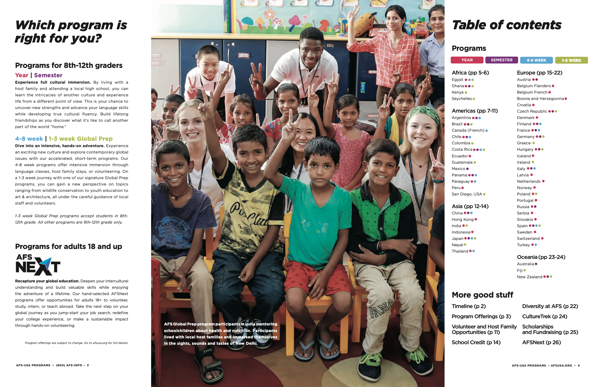
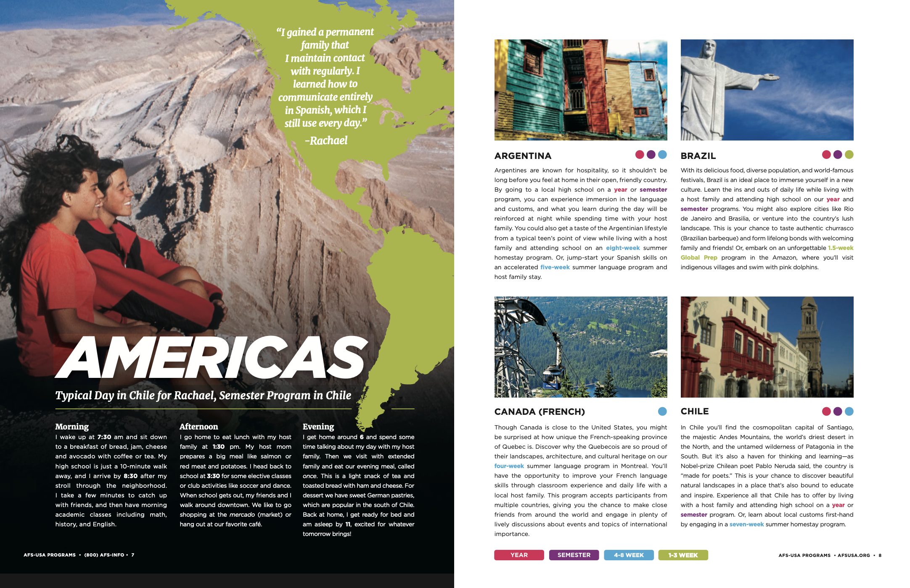
Editorial planning, positioning, launch content, audience research, and content systems.
Search strategy, structured data, AI visibility analysis, answer engine optimization, and content architecture.
Clear explanations of APIs, financial infrastructure, crypto products, and complex B2B tools.
Organic performance analysis, reporting workflows, search opportunity mapping, and growth-oriented content planning.
Google Ads, Meta, LinkedIn, Twitter/X, campaign setup, ad copy, landing page alignment, and reporting.
AI-assisted workflows, API-based research, reporting scripts, structured prompts, and lightweight automation for marketing and search projects.
Let's chat! If you want to discuss work, writing, collaborations, or cheap eats in New York, feel free to DM me.